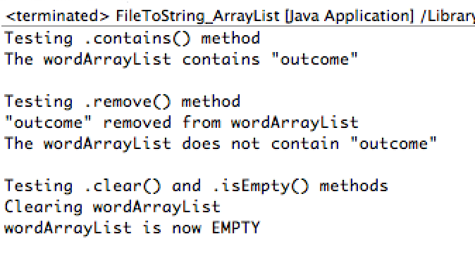

Week 9 Ex. 2: Demo the following ArrayList methods: contains, remove, clear and isEmpty using our data set.
Output:

Source Code:
package CSIS2420unit2;
// Write a file to a string
// Usage: java fileToString filename
import java.io.FileInputStream;
import java.io.IOException;
import java.util.*;
public class FileToString_ArrayList {
public static void main(String[] args) throws IOException {
String [] wordArray= utilities.fileToStringArray("awmt.txt");
ArrayList wordArrayList = new ArrayList();
wordArrayList.addAll(Arrays.asList(wordArray));
System.out.println("Testing .contains() method");
if (wordArrayList.contains("outcome")) {
System.out.println("The wordArrayList contains \"outcome\"");
}
System.out.println("\nTesting .remove() method");
for (int i = 0; i < wordArrayList.size(); i++) {
wordArrayList.remove("outcome");
}
System.out.println("\"outcome\" removed from wordArrayList");
if (!wordArrayList.contains("outcome")) {
System.out.println("The wordArrayList does not contain \"outcome\"");
}
System.out.println("\nTesting .clear() and .isEmpty() methods");
System.out.println("Clearing wordArrayList");
wordArrayList.clear();
if(wordArrayList.isEmpty()){
System.out.println("wordArrayList is now EMPTY");
}
}
}